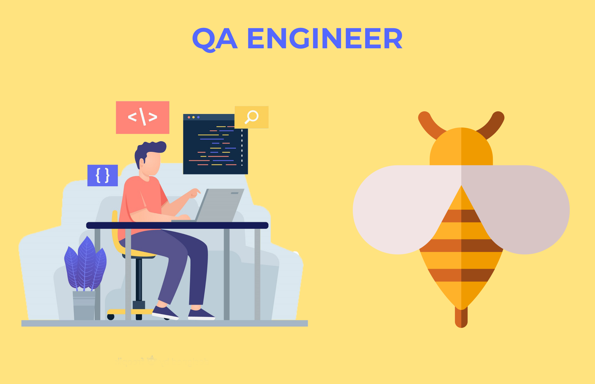
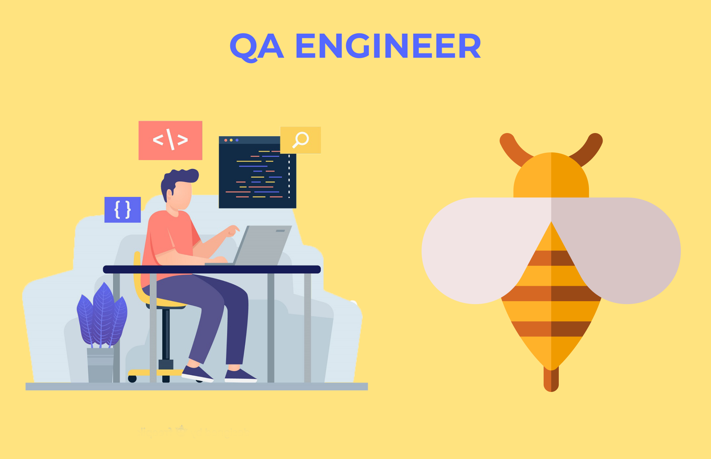

Я хочу не только получить диплом, но и научиться новому. Ранее я уже
изучал тестирование
ПО и
этот курс, для меня, как закрепление материала.
Сейчас моя второстепенная задача - найти работу Тестировщика и получать практический
опыт.
Обучение я точно закончу, но работу нужно начинать искать сейчас.
Я начал искать работу еще до нового года, но чем ближе было к нему, тем меньше было вакансий.
 
